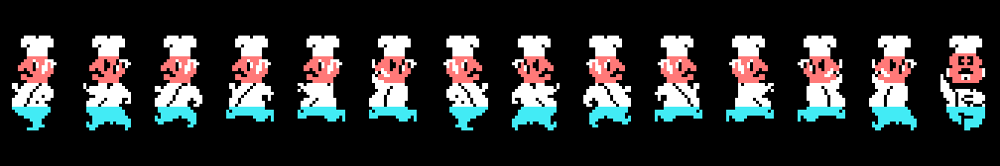
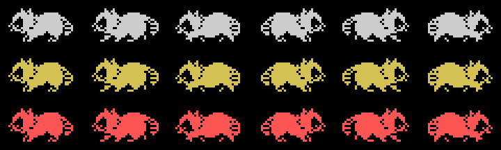
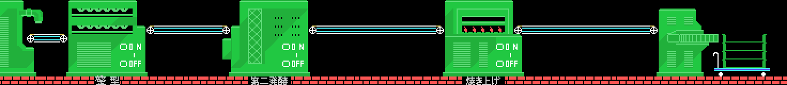
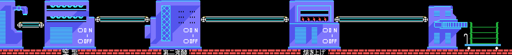
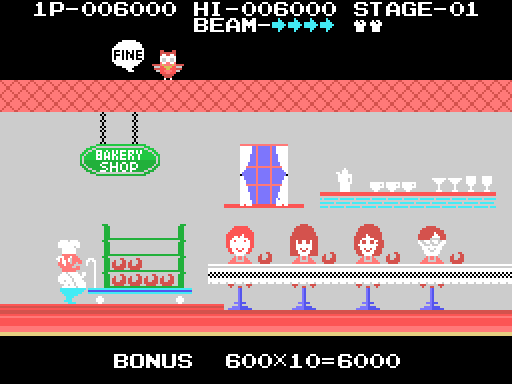
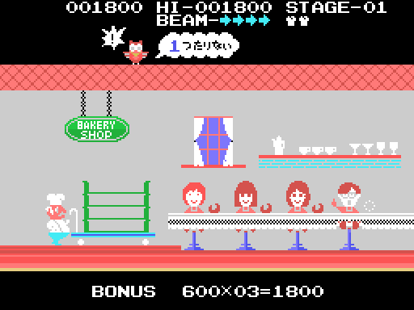
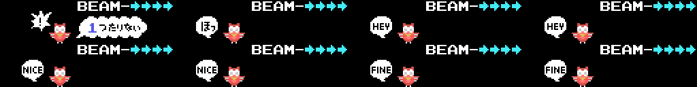
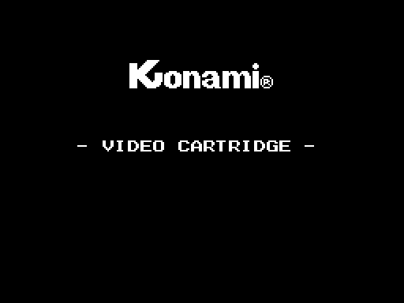
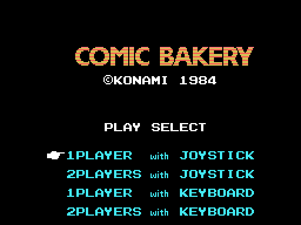

The baker guards the bakery from the raccoons during an eight-minute working day by the clock (0x4614). The baker walks along the floor, jumps with both buttons and shoots; a raccoon that touches the baker costs a life. When the day is over, the cartridge counts the loaves (0x5B5E).
The pictures below are neither captures nor the cartridge running: they are the ROM's tables put together the way the game does it —the screens and the bakery with its set-up chain, the baker and the raccoons with their pose and step tables—. Checked against openMSX in sixteen game dumps: 0 bytes different in the colour, pattern and sprite pattern tables.
Four sprites (0x4C51), with the patterns of one of the fourteen poses at 0x7124 and the row and colour of the template at 0x7096: the second is 0x10 below the first, the third 8 and the fourth 0x20.

Two sprites in a row (0x51D9), the second sixteen pixels to the right and with the pattern four further on. Walking left the patterns start at 0x78, and walking right 0x3C further on; the step is picked by the frame counter and only ever gives 0, 8 or 16. There are three, told apart by the colour at 0x51B2: grey, yellow and red.

There is one bakery: the 92 columns of ten cells at 0x7604. The screen shows 32 of them, from row 13 down. But the stage set-up (0x49BB to 0x49E7) picks its graphics blocks with the counter at 0xE051, and the bakery changes machines:
| stages | machines |
|---|---|
| 1, 2, 4, 6, 8... | green |
| 3, 5, 7, 9... | blue |


When the day is over, the baker leaves the floor and the BAKERY SHOP is set up (0x5AD6), with four children sitting at the counter. The baker pushes the cart with the loaves made to the beat of the end-of-stage tune (0x96): the cart moves on until the score reaches the 0xD4 mark (0x5BAA). Then each child gets a loaf (0x5C6F) and a bonus of 600 × loaves is paid (0x5CCF). On the roof a character pops up with a speech balloon that depends on the loaves (0x5D22):
| loaves | balloon |
|---|---|
| 4 | ほっ ("phew") |
| 5-6 | HEY |
| 7-8 | NICE |
| 9 or more | FINE |
With fewer than four, some child goes without: the balloon says how many are missing (4 − loaves; "1つたりない" is "one short") and a life is lost (0x5D0E, scene 12); with no lives left, the game is over (0x42A9). Measured: with three loaves the next stage starts with one life less (2 to 1), and with ten, with the same.
Unlike the other pictures on this page, this scene comes from running the cartridge, like the music: tools/tienda.py cold-starts it with z80run, gives each frame what the interrupt does (0x406E) and takes the VRAM through the same checked renderer. The only things set by hand are what the player would do: press in the menu, end the day (0xE00D) and how many loaves were made (0xE060).



Built from the ROM and checked against openMSX down to 0 bytes.

